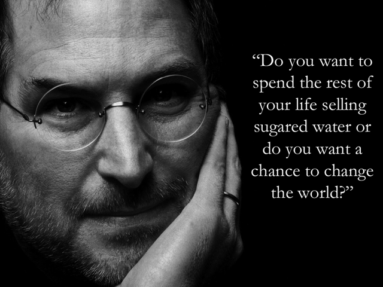

David is a strength coach and bestselling Men's Health author. You can follow him at HowToBeast.com.


Yesterday I was enjoying a beautiful spring day in New England, laying down and reading in a park, when a thought entered my mind: should I be concerned with the advancement of mankind as a species or with my own personal life’s journey.
I suppose these two things are not mutually exclusive, but nonetheless I couldn’t shake this dilemma. On one hand, if it weren’t for those who dedicate their lives to researching cutting edge technology, we wouldn’t have many of the devices that make our lives easier today. We may still be in the paleolithic times or the middle ages.

But does the latest technology really even make our lives easier? You can definitely make the argument that devices like smartphones – in all their glory, gigahertz, and mega-pixels – are actually a huge detriment to society. They take away from having real experiences and replace them with kids and adults who visit some ancient monument like Machu Picchu only to stare at a screen the entire time they’re there. And while improved food production techniques have allowed the population of our planet to rise exponentially, this has led to overpopulation, disease, and problems of it’s own.
However, I can’t take a hard stand against human progress. The medical field, for example, is something whose progress I can only view in a positive light: it serves to directly improve our quality of life.

When I picture someone who’s dedicated his life to the progress, or the advancement of technology, at least, I think of Steve Jobs. He’s undoubtedly considered a great man, but if you read his biography it’s unclear whether or not what he sacrificed – in many cases this was his own happiness – is something that I’d sacrifice in exchange for his achievements.
The flip side of the coin, and the argument that I support, is valuing your life’s journey above all. That is, thinking of your life as a story and spending your days making decisions that will fill this story with unforgettable experiences and remarkable growth. This means not taking anything too seriously, including yourself. It means not trying so hard to please your family, friends, girlfriends, or strangers that you sacrifice your own best interests– your own story. It means putting your physical and mental health above everything else.
I’m not advocating being the tyrant who sacrifices his close ones for his own personal gain. No, I want my story to be one of the respectable alpha who dominates his own life and is also a good friend and supportive family member. To do this you must maintain an unwavering integrity. You cannot let an obsession with money, women, or any other desire blind you. Everything is temporary, including our lives, and we must proceed with this fact at the forefront of our mind.
We must invest our time into pursuits that will reward us with rich experiences and a sense of personal growth. The good thing is that often times these pursuits end up offering value to all of those around us. This can could be through dedication to cutting edge research that culminates in a life saving device or simply through writing books that motivate people to change their lives for the better.
Regardless of what path you choose, viewing your life as a story can serve to help remove you from your immediate circumstances and emotions, and allow you to make level-headed choices that will lead you in the right direction.
Check out my new book ‘Dominate’ for a blueprint on how to conquer fear, achieve goals, and build an undeniable presence. Click here to read reviews and get it.
Read More: Don’t’ Let Women Rule Your Life